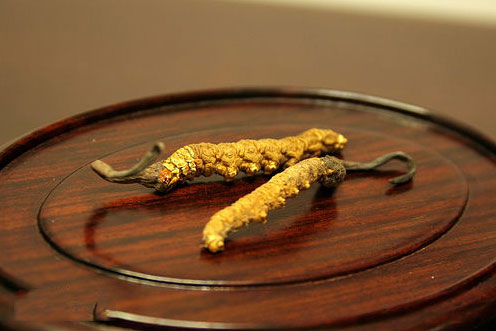

关于国庆发货通知2016.03.04
冬虫夏草又名虫草，是我国民间惯用的一种名贵滋补药材，其营养成分高于人参，可入药，也可食用，是上乘的佳肴，具有很高的营养价值。冬虫夏草可以增强机体的免疫力，滋补肺肾，对肺癌、肝癌等有明显的抑制作用。在临床上对肺虚久咳，气喘，肺结核咯血，盗汗，肾虚腰膝酸痛，阳痿遗精，神经衰弱及化疗、放疗后的红细胞下降都有疗效[1] 。

冬虫夏草又名虫草，是我国民间惯用的一种名贵滋补药材，其营养成分高于人参，可入药，也可食用，是上乘的佳肴，具有很高的营养价值。冬虫夏草可以增强机体的免疫力，滋补肺肾，对肺癌、肝癌等有明显的抑制作用。在临床上对肺虚久咳，气喘，肺结核咯血，盗汗，肾虚腰膝酸痛，阳痿遗精，神经衰弱及化疗、放疗后的红细胞下降都有疗效[1] 。